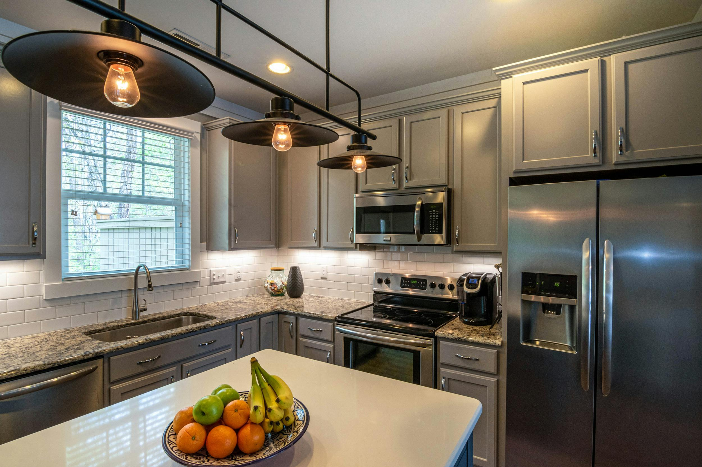
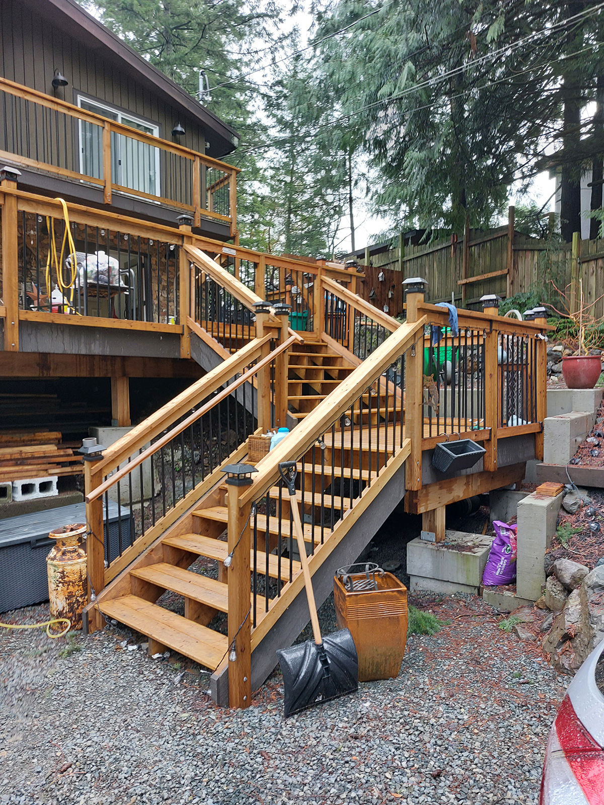
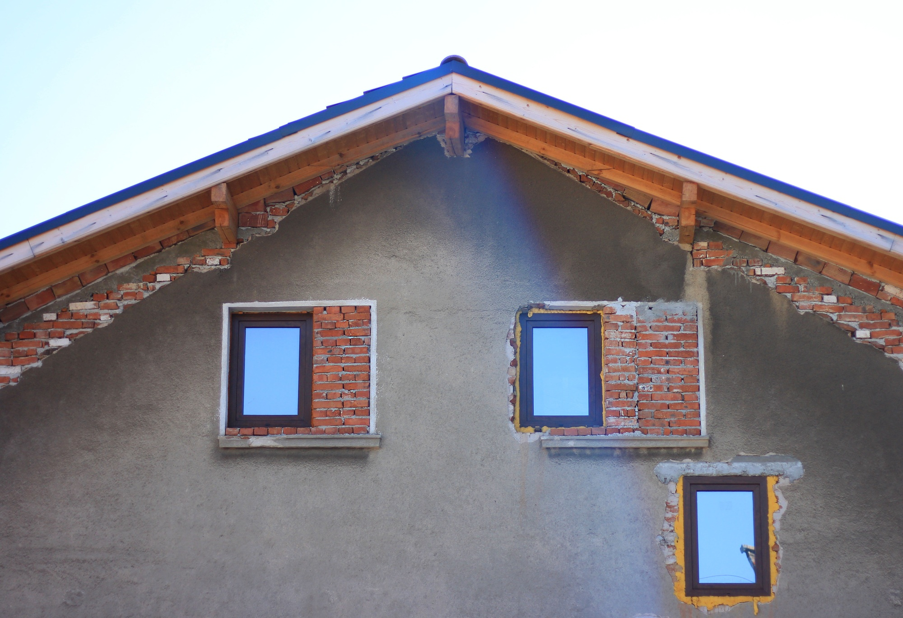
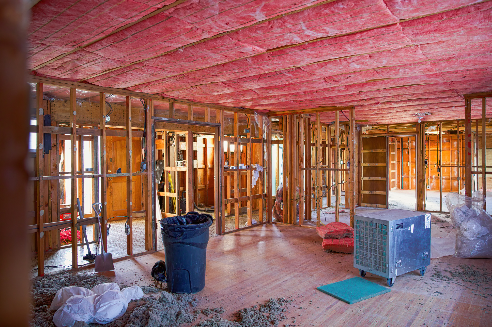

Kitchen renovation
Cabinetry, workflow, counters, lighting, permitting, installation and final inspection.
Pross Renovations plans kitchen, bathroom, full-home and exterior work around scope, budget, timeline and the older-home hazards that can derail a project if they’re ignored.
A kitchen layout, a bathroom rebuild, a deck, a roof line, a legal suite. Each one has a visible finish and a hidden set of decisions underneath.
Pross keeps those decisions close to the front: permits, inspections, sequencing, trades, hazardous materials, structural work and the budget conversation. That makes the page less about dreaming and more about getting the house handled properly.
Kitchens, bathrooms, living rooms, bedrooms, full remodels, flooring, storage, lighting, cabinetry and finish work.
Decks, patios, siding, windows, roofing and structural upgrades for Vancouver Island rain.
Precautions around asbestos, lead paint and mold before renovation work disturbs walls, flooring or ceilings.



Most homeowners arrive with one problem. Pross turns that into a practical scope before the quote becomes a moving target.
Cabinetry, workflow, counters, lighting, permitting, installation and final inspection.
Showers, tubs, vanities, heated-floor options, accessibility and tile details.
Room-by-room planning across living spaces, bedrooms, layout changes and finishes.
Decks, patios, siding, windows, roofing and structural work built for local weather.
Many Victoria homes can hide asbestos, lead paint or mold. Pross names that risk up front so testing and qualified handling can happen before work disturbs it.
Before work starts, the team plans around materials that may be disturbed, permits and inspections, and the qualified trades needed to keep the job safe and compliant.

Call or email with the room, exterior area or full-home scope. Include the city and whether the home is older.
The consultation turns the idea into a practical plan: what work is included, what has to be checked, and what order makes sense.
For structural work, older-home materials or exterior upgrades, the process accounts for inspections before the finish work begins.
“Victor was always there to provide clear and fair answers.”
Allan E. Stix · client letter“The workmanship and attention to detail, both to meet codes and to provide functional living space for the suite was exceptional.”
Allan E. Stix“You highlighted not only what needed to be done, but why and in many cases recommended that we do specific work at a future time.”
Robert J. Meikle“Vic and his crew were professional, hard working and very dependable. They were honest, respectable and always on time.”
Shayne JessopTell the team what you want renovated, where the home is, and what needs to be checked before work starts.